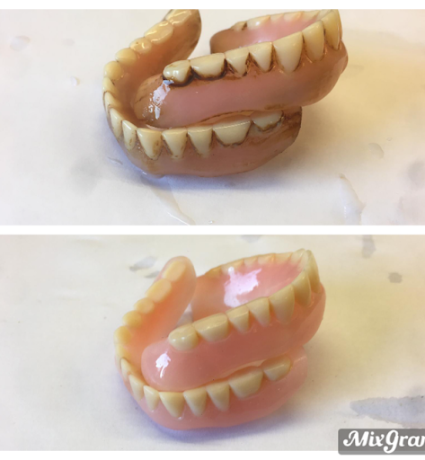

Fast, Reliable Denture Repairs & Additions in Pontefract
Broken plate, snapped tooth, or loose fitting? Bring your denture directly into our registered Pontefract laboratory bench at 13 The Circle. Speak directly with our dental technicians for rapid while-you-wait repairs, precision acrylic curing, and seamless additions without dental clinic markups or weeks of waiting.
Household superglue contains toxic cyanoacrylates that chemically burn acrylic prosthetic margins and prevent clean re-bonding. Keep broken pieces dry in a clean container and bring them directly to our workbench for biocompatible laboratory polymerization.
Direct Laboratory Services in Pontefract
Every repair, modification, and restoration is crafted on-site with dental-grade cross-linked polymers and high-frequency curing units.
Fractured & Split Acrylic Base
Re-alignment and vacuum-pressured polymerization of hairline fractures, midline splits, and snapped plates. Restored with high-impact biocompatible dental acrylic and optional embedded stainless steel reinforcement mesh.
Detached Tooth Replacement
Single or multiple dislodged prosthetic teeth mechanically re-anchored into dovetail acrylic retention pockets. Multi-layer Vita shade and anatomical mould matching ensures seamless integration with surrounding natural or fake teeth.
Tooth Additions Post-Extraction
Recently had a natural tooth extracted by your dentist? We graft acrylic prosthetic teeth and matched pink gum base directly onto your existing partial plate. No need to order an expensive new denture from scratch.
Ultrasonic Clean & Tartar De-scale
High-frequency cavitation bath dissolves rock-hard calculus, dense tobacco tar, coffee and red wine discoloration. Finished with a sterile pumice lathe buff for an ultra-smooth, bacteria-resistant mirror gloss.
Hard & Soft Tissue Relining
Resurfacing the tissue-fitting aspect of loose upper and lower dentures. Eliminates movement, stops food traps, and restores natural hermetic suction caused by natural gum recession and bone resorption.
Real Casework From Our Pontefract Bench
See the tangible difference clinical laboratory ultrasonic baths and precision acrylic polymerisation make.

Severe Calculus & Heavy Stain Removal
Patient brought in an upper and lower denture heavily encrusted with dark calcified plaque and tobacco residue. Ultrasonic chemical immersion broke down calcifications within 25 minutes, followed by a dual-stage pumice and rouge wheel buff to restore a glass-smooth surface.
Clean Midline Re-Bonding & Internal Wire Mesh
Upper complete acrylic denture suffered complete fracture down the midline vault. Plaster cast formed, edges beveled, and high-strength stainless steel reinforcement mesh submerged into pressure-cured cold-polymerizing acrylic to guarantee it will not re-snap along the same seam.
Emergency Anterior Tooth Graft
Patient underwent an urgent extraction of a visible front incisor. Walked directly from dental practice to 13 The Circle. We took an impression, selected a matching Vita A3 mould, and cured the addition onto their chrome skeleton within 3 hours, leaving no visible gap.
Simple 4-Step Direct Laboratory Workflow
You deal straight with the dental technician who fabricates and repairs your appliance. No middlemen, no reception markups.
Call or Drop In
Give us a quick ring on 07779 019522 or simply walk into our shopfront at 13 The Circle, Pontefract.
Pontefract Drop-Off
Enjoy level step-free ground-floor access and easy doorstep parking directly outside our shopfront. Hand over your broken denture safely.
Precision Bench Repair
Our technician casts a stone matrix, cleans fractured facets, injects high-impact polymer, pressure-cures, and carries out a sterile pumice lathe polish.
Collect & Smile
Return in 1–2 hours. Test fit for bite balance and comfort. Leave with your appliance restored to clinical strength and clean gloss.
Direct Laboratory Pricing Matrix
| Laboratory Procedure | Turnaround Time | What Is Included | Fixed Fee |
|---|---|---|---|
| Initial Bench Diagnostic & Assessment | 5 – 10 Mins | Thorough examination of fracture plane, acrylic fatigue, and fitting suitability. Zero obligation. | FREE |
| Emergency Fracture / Crack Repair | 1–2 Hours While You Wait | Cast stabilization, joint preparation, pressure curing, edge re-alignment & sterile high-shine polish. | £45 |
| Detached Tooth Re-Attachment | While You Wait | Re-anchoring detached synthetic tooth with undercuts and pink matrix re-polymerization. | £50 |
| Post-Extraction Tooth Addition | Same Day (2–4 Hrs) | Mould & shade matching, addition of single tooth onto existing partial denture base. | £65 |
| Ultrasonic Clean & Lathe Pumice Buff | 30–45 Mins | Cavitation dissolution of stubborn calculus and tobacco tars followed by complete sanitization and buff. | £30 |
| Stainless Steel Reinforcing Wire Mesh | Integrated into repair | Internal medical-grade mesh woven directly into acrylic to resist high bite load forces. | +£20 |
Convenient Doorstep Access in Pontefract
Located conveniently on The Circle in Pontefract (Chequerfield area). Patients appreciate our complete step-free shopfront entrance and hassle-free doorstep parking right outside our front window.
13 The Circle, Pontefract WF8 2AY, United Kingdom
Google Plus Code: PF9G+GB Pontefract
Send a Photo Straight to Our Workbench
Unsure if your fractured plate or cracked tooth can be repaired while you wait? Send a quick photo straight to our bench technician for an immediate assessment.
Frequently Asked Questions
Clear answers directly from our registered dental laboratory technicians in Pontefract.
No referral is necessary. Under UK dental regulations, dental laboratories are fully permitted to carry out repairs, fracture re-bonding, ultrasonic cleans, and tooth additions direct to the public. You can simply walk directly into our Pontefract shopfront at 13 The Circle.
Most straightforward snaps, cracks, and dislodged tooth repairs are completed within 1 to 2 hours. Patients frequently pop across to local shops or wait comfortably while our technician casts, polymerizes, and polishes the appliance.
Yes. If the acrylic saddle attached to your chrome frame is broken or missing a tooth, this can be repaired rapidly same day. If the cobalt-chromium metal casting itself is snapped, bring it in for our technician to inspect if specialist micro-soldering or laser welding is feasible.
Yes. Because we use laboratory-grade pressure polymerization and cross-linked resins, the chemical bond is fully cured when you leave our bench. You do not need to wait 24 hours before eating or drinking.
Don't worry. We stock hundreds of authentic Vita and high-grade multi-layer artificial acrylic teeth in all anatomical shapes, widths, and shades. We will select an exact match and cure it into place while you wait.
Don't spend another day struggling to eat or smile.
Drop into our Pontefract laboratory today. Fast while-you-wait emergency repairs, direct dental technician advice, and genuine craftsmanship right on The Circle.